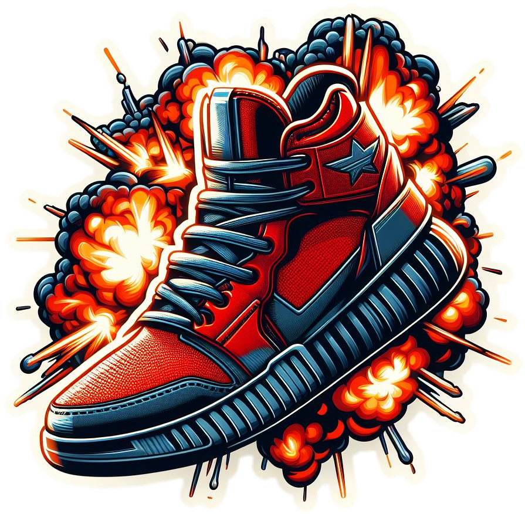

Jogo
Explosive Sneakers:
No ano de 2024, aconteceu uma guerra biológica em que as pessoas ficaram más e hoje querem matar aquelas que não foram infectadas. Apenas pessoas de coração puro
puderam se safar do vírus e hoje trabalham como policiais, bombeiros, tios de perua escolar, médicos e enfermeiros, mas os heróis são conhecidos como "Explosive Sneakers"
e seu trabalho é fazer com que os infectados não cheguem ao porto-seguro, chamado de UNIP (União das Nações de Integração a Paz). Os infectados se locomovem atráves de
veículos como carros e motos, na qual os "Explovise Sneakers" tem que explodir. Eles possuem uma gama de tênis, do mais feio e básico ao mais lindo e avançado, porém além
de protegerem a UNIP, eles não podem acertar a "liga dos resistentes" que se locomovem imperceptivelmente em veículos como Ambulância, Carros da policia, ônibus escolar,
carros de bombeiro, Carro forte entre outros.
Os explosive sneakers tem apenas 3 vidas e elas serão descontadas ao acertar o veículo errado, ou permitir que os infectados passem. Além disso, os sneakers possuem um
limite de explosões antes que eles superaqueçam e tenham que esperar o resfriamento.
Essa é a ideia de um dos jogos que ele e seu grupo já estão desenvolvendo e deverá ficar pronto em meados de Maio e assim que for finalizado, será anunciado nas principais
plataformas, como Apple Strore e Google Play.